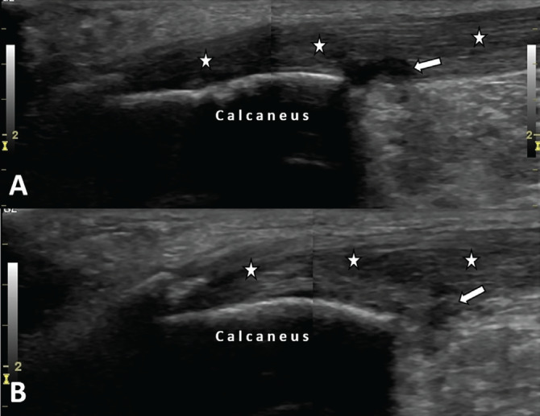
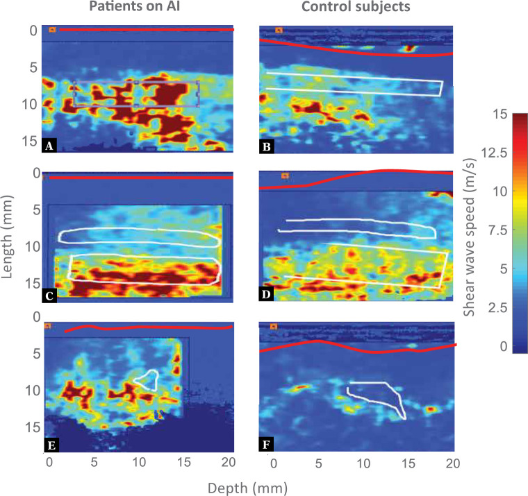
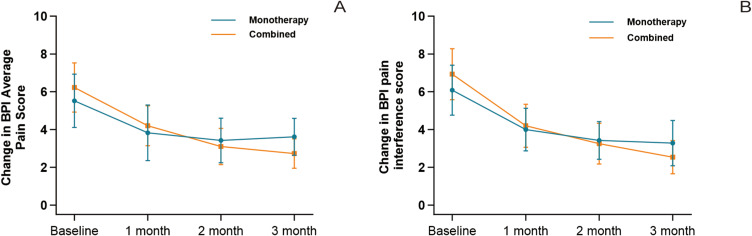
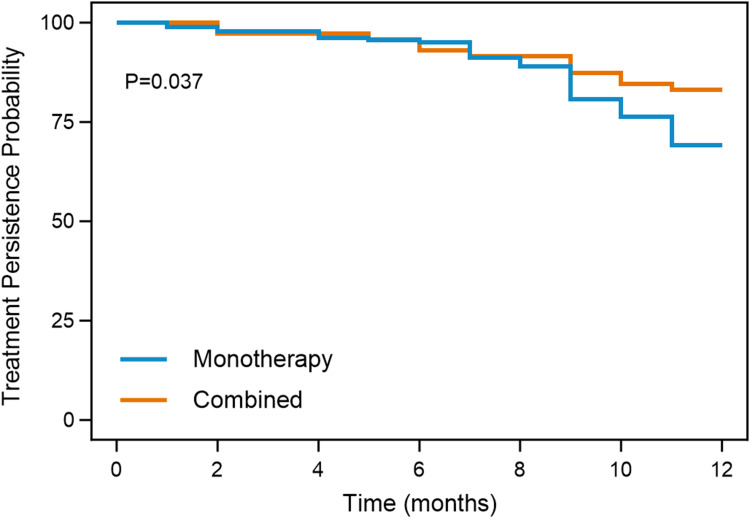

511 — Đau cơ–khớp do thuốc ức chế aromatase (AIMSS) & sức khỏe xương / Aromatase inhibitor-associated musculoskeletal symptoms
Tags: pattern:dau-khop-doi-xung pattern:viem-bao-gan-co vung:co-xuong vung:vu score:BPI score:FRAX protocol:DXA protocol:sieu-am-co-xuong incidentaloma:mat-xuong
Mức chắc chắn (certainty): tổng hợp y văn (literature synthesis) — nhóm tự biên từ 4 bài mở toàn văn (Rheumatol Adv Pract 2024, PMC11003819; Int J Womens Health 2026, PMC13221566; Eur J Breast Health 2025, PMC12180086; J Ultrasound 2021, PMC8008134) + 2 bài về xương (Clin Transl Oncol 2026, PMC13401549; Front Med 2025, PMC12702863) + 1 nghiên cứu can thiệp xương (BMC Musculoskelet Disord 2025, PMC12613706). Số liệu giữ theo từng cohort.
1. Tổng quan — AIMSS là gì, vì sao đau, và vì sao nó là chuyện của BÁC SĨ HÌNH ẢNH
- Định nghĩa: AIMSS (aromatase inhibitor-associated musculoskeletal symptoms) là nhóm đau khớp, cứng khớp buổi sáng, đau cơ, hạn chế vận động, viêm bao gân/ống cổ tay, viêm gân xuất hiện hoặc nặng lên sau khi bắt đầu thuốc ức chế aromatase (AI: anastrozole, letrozole, exemestane) ở phụ nữ ung thư vú có thụ thể hormone dương tính. AIA (AI-induced arthralgia) là tên gọi hẹp hơn, chỉ phần đau khớp.
- Ngưỡng định lượng (bắt buộc nhớ):
- Tần suất: 20–50% người dùng AI (review 2026); trung bình 39,1% khi gộp 23 nghiên cứu (20.652 bệnh nhân); một số cohort tới 68–74%. Đau khớp là lý do số 1 để ngừng AI, với tỷ lệ ngừng tới 32,4%.
- Thời điểm khởi phát: trung bình 4,5 tháng sau khi bắt đầu AI; 75% trong 3 tháng; đa số trong 6 tháng đầu.
- Kiểu khớp: ít khớp (oligoarticular, < 5 khớp)** ở 4/5 nghiên cứu; thứ tự hay gặp: **bàn tay/cổ tay > gối > lưng > háng > cổ chân/bàn chân > vai/khuỷu/cổ.
- Yếu tố nguy cơ có HR/aHR (đọc để tiên lượng ai sẽ đau): tuổi > 75 vs < 45: aHR 3,18 (95% CI 2,65–3,81); rối loạn cảm xúc aHR 1,32; rối loạn lipid aHR 1,18; tăng huyết áp aHR 1,11; letrozole vs tamoxifen aHR 1,27; xạ trị trước đó aHR 1,16; opioid trước đó aHR 1,37; NSAID/paracetamol trước đó aHR 1,32.
- Yếu tố nguy cơ không có HR nhưng lặp lại nhiều nghiên cứu: **< 5 năm từ lần kinh cuối** (so với > 10 năm, p = 0,002), béo phì, đau khớp có sẵn, bệnh khớp viêm/viêm xương khớp có sẵn, hoá trị bổ trợ trước đó, loãng xương/thiếu xương (p < 0,001).
- TẠI SAO đau (cơ chế — giải thích bằng sinh lý, không liệt kê):
- AI ức chế enzym aromatase → estrogen giảm mạnh ở mô ngoại vi. Estrogen có tác dụng chống viêm nhẹ và giảm ngưỡng đau; khi mất đột ngột, cytokine viêm tăng trong tế bào sụn, ngưỡng đau hạ → đau và cứng.
- Mất xương nhanh do thiếu estrogen cũng là một phần của AIMSS (không chỉ là "tác dụng phụ riêng"): người có AIMSS có thiếu xương/loãng xương nhiều hơn có ý nghĩa (p < 0,001, 316 ca). Vì vậy đau khớp + mất xương phải được xử lý cùng một quy trình.
- Thay đổi collagen gân: estrogen tăng tổng hợp collagen và giảm độ cứng gân; thiếu estrogen → gân cứng hơn, dễ viêm → đây là cơ sở cho viêm gân/viêm bao gân và cho siêu âm đàn hồi (SWE) thấy gân cứng hơn.
- Vì sao người mới mãn kinh đau hơn: yếu tố quyết định là tốc độ giảm estrogen (dao động nhanh), không phải nồng độ tuyệt đối → giải thích vì sao < 5 năm sau mãn kinh có tần suất cao hơn.
- Vì sao bác sĩ hình ảnh phải biết:
- Phần lớn AIMSS KHÔNG có tổn thương trên X-quang → X-quang bình thường không loại trừ; siêu âm mô mềm là phương thức đầu tay khi có đau khu trú.
- Siêu âm có thể thấy bất thường dù bệnh nhân chỉ "đau khớp": viêm bao gân, tăng dịch bao gân, tăng tưới máu, gân cứng hơn trên SWE.
- Cùng một bệnh nhân vừa có nguy cơ ung thư tái phát, vừa có nguy cơ gãy xương → mọi đau xương khu trú phải loại trừ di căn và gãy xẹp đốt sống, không được mặc định là AIMSS.
2. Mẫu hình (pattern) + chẩn đoán phân biệt theo vị trí & thời gian (Gamut)
- Khuôn 1 — Đau ĐỐI XỨNG hai bàn tay/cổ tay, cứng buổi sáng 15–60 phút, khởi phát 1–6 tháng sau AI. Gamut: AIMSS vs viêm khớp dạng thấp (RA) vs thoái hóa khớp (OA) vs hội chứng ống cổ tay (CTS). Chốt: đối xứng + không sưng nóng đỏ + không phá xương trên X-quang + liên quan thời điểm thuốc → AIMSS; sưng mềm, đau nhiều đêm, RF/anti-CCP dương → RA.
- Khuôn 2 — Đau/ngứa ran 3 ngón rưỡi đầu, đau về đêm, teo mô cái. Gamut: CTS do AI vs CTS vô căn vs bệnh lý rễ C6. Chốt: thời điểm sau AI + đáp ứng với nẹp/tiêm; CTS do AI có thể là lý do ngừng thuốc tới 67% (báo trong nghiên cứu mô bệnh).
- Khuôn 3 — Đau gân Achilles/gân bánh chè hai bên, đau khi đi lại. Gamut: viêm gân do AI vs viêm gân vôi hóa vs bệnh lý enthesitis (spondyloarthritis). Chốt: US: gân dày, giảm âm, có dịch bao gân; không có viêm khớp cùng chậu/xương cùng trên MRI → loại bệnh lý viêm hệ thống.
- Khuôn 4 — Đau lưng/đau xương khu trú, có tiền sử AI lâu năm. Gamut: gãy xẹp đốt sống do mất xương vs di căn xương vs cơ học. Chốt: MRI: phù tủy dạng dải, không phá cuống → xẹp lành tính; phá cuống/mô mềm → di căn.
- Khuôn 5 — Một khớp sưng nóng đỏ, sốt. Gamut: nhiễm khuẩn khớp vs gout/pseudogout vs bùng phát AIMSS. Chốt: một khớp + sốt + dịch khớp đục → chọc hút + cấy, không được gọi là AIMSS.
- Khuôn 6 — Đau cơ lan tỏa, yếu gần, không đau khớp. Gamut: đau cơ do AI vs bệnh cơ do statin vs polymyalgia rheumatica (PMR) vs suy giáp. Chốt: CK, TSH, tốc độ máu lắng/CRP; PMR đáp ứng nhanh với prednisolone liều thấp.
- Gợi nhớ "J-O-I-N-T": Joint symmetry (đối xứng) — Onset 1–6 tháng sau AI (khởi phát theo thuốc) — Inflammation absent (không sưng nóng đỏ) — Normal X-ray (X-quang bình thường) — Tendon/CTS involvement (kèm gân/ống cổ tay).
3. Bảng so sánh phân biệt (ma trận đối chiếu)
| Thực thể (entity) | Hình ảnh điển hình | Chốt vào (rule-in) | Chốt loại (rule-out) | Gợi ý xác nhận |
|---|---|---|---|---|
| AIMSS (đau khớp do AI) | X-quang bình thường; US: viêm bao gân, tăng dịch bao gân, tăng tưới máu; SWE: gân cứng hơn (vận tốc sóng cao hơn) | Đối xứng + khởi phát 1–6 tháng sau AI + X-quang bình thường + không sưng nóng đỏ | Sưng mềm nhiều khớp, phá xương, RF/anti-CCP dương → RA | US + SWE; chẩn đoán loại trừ; đáp ứng khi đổi AI |
| RA (viêm khớp dạng thấp) | X-quang: hẹp khe, bào mòn bờ, thưa xương cạnh khớp; US: pannus + Doppler dương | Sưng mềm đối xứng > 6 tuần + RF/anti-CCP + phá xương | Không sưng, X-quang bình thường, theo thuốc → AIMSS | RF, anti-CCP, CRP; X-quang bàn tay |
| CTS do AI | US: dây thần kinh giữa dày, giảm âm, mất phân biệt bó, tăng dịch bao gân gấp | Dị cảm 3,5 ngón + đau đêm + sau AI | Teo mô cái + dẫn truyền thần kinh nặng → CTS muộn, cần mổ | US + điện cơ; nẹp/tiêm; 67% có thể phải ngừng AI |
| Viêm gân/viêm bao gân do AI | US: gân dày, giảm âm, mất cấu trúc bó, dịch bao gân, Doppler có thể âm | Đau điểm bám + gân dày + dịch bao gân + sau AI | Gân đứt hoàn toàn (mất liên tục) → cấp cứu chỉnh hình | US động + SWE; MRI nếu nghi đứt |
| Gãy xẹp đốt sống do AI (AIBL) | X-quang: xẹp hình nêm/đĩa; MRI: phù tủy dạng dải, bờ không phá cuống | Đau lưng cấp + xẹp + DXA T ≤ −2,5 hoặc FRAX cao | Phá cuống, mô mềm, nhiều tầng → di căn | MRI cột sống; DXA; so phim cũ |
| Di căn xương | Tiêu xương/xơ xương khu trú, phá cuống, mô mềm, nhiều ổ | Tiền sử ung thư + phá cuống + nhiều ổ | Xẹp dạng dải, không phá cuống, đối xứng → lành tính | MRI/CT; PET-CT; sinh thiết nếu cần |
| Mất xương do AI (AIBL) — không triệu chứng | DXA: BMD giảm nhanh; > 4%/năm ở cột sống hoặc háng = "mất xương nhanh" | DXA giảm > 4%/năm hoặc > 5% so với nền → can thiệp | BMD ổn định, T ≥ −1,0 → theo dõi | DXA 1 năm sau bắt đầu AI (ESMO); 2 năm/lần (ASCO) |

Siêu âm dọc gân Achilles phải (A) và trái (B): gân dày, giảm âm (dấu sao), dịch bao gân sau gót (mũi tên), không thấy tăng tưới máu trên Doppler. Bệnh nhân 60 tuổi dùng letrozole 2,5 mg/ngày, đau hai cổ chân gần 1 năm. Nguồn: Eur J Breast Health 2025 (PMC12180086), CC BY-NC-ND 4.0 — giữ nguyên bản.Tiểu mục dấu hiệu — 3 điểm đọc siêu âm hay bị bỏ
- Dịch bao gân là dấu hiệu sớm nhất, có thể có trước khi gân dày rõ; đo bằng mm ở vị trí dày nhất, so bên đối diện.
- Doppler âm không loại trừ viêm gân do AI: trong ca minh họa, không có tín hiệu Doppler nhưng gân vẫn dày, giảm âm và đau khi ấn đầu dò (sono-palpation dương). Đừng đợi Doppler dương mới chẩn đoán.
- SWE (siêu âm đàn hồi sóng biến dạng) là dấu hiệu CHỨC NĂNG, không phải hình thái: ở 6 bệnh nhân AIMSS so với 7 chứng, gân duỗi ngón 1 cứng hơn (p = 0,001), ngăn duỗi 4 (p = 0,014), khớp bàn–ngón 3 (p = 0,002), gộp ngăn duỗi trục dài (p = 0,044) và trục ngắn (p = 0,035). Đây là bằng chứng cơ chế gân cứng do thiếu estrogen, chưa đủ để thành xét nghiệm lâm sàng thường quy.

*Bản đồ SWE ngăn duỗi cổ tay: đỏ = gân cứng (vận tốc sóng cao), xanh = mềm. Cột trái = bệnh nhân dùng AI; cột phải = chứng. Gân người dùng AI cứng hơn rõ rệt. Nguồn: J Ultrasound 2021 (PMC8008134), CC BY-NC-ND 4.0 — giữ nguyên bản.*4. Protocol — hình ảnh, điều trị theo bậc & sức khỏe xương
4.1. Khi nào chụp gì (đau cơ–xương ở người dùng AI)
- Bước 1 — X-quang vùng đau nếu đau khu trú + có chỉ định loại trừ gãy/thoái hóa. X-quang bình thường KHÔNG loại trừ AIMSS.
- Bước 2 — Siêu âm mô mềm (đầu dò thẳng ≥ 12 MHz) cho: cổ tay/bàn tay (gân gấp, gân duỗi, dây thần kinh giữa), gân Achilles, gân bánh chè, điểm bám gân. Ghi: độ dày gân (mm), dịch bao gân (mm), Doppler, so bên đối diện.
- Bước 3 — SWE (nếu có): đo vận tốc sóng (m/s) ở gân duỗi ngón 1 và dây thần kinh giữa; so với bên đối diện và với người không dùng AI. Chưa có ngưỡng tuyệt đối được chuẩn hóa → ghi "chưa rõ", không bịa số.
- Bước 4 — MRI chỉ khi: nghi đứt gân, nghi nhiễm khuẩn khớp/xương, nghi di căn/gãy xẹp đốt sống, hoặc đau không giải thích được sau US.
- Bước 5 — DXA (xem 4.3) — không được bỏ, vì AIMSS và mất xương đi cùng nhau.
4.2. Điều trị AIMSS — bậc thang có số
- Giáo dục + đánh giá bằng thang điểm: dùng BPI (Brief Pain Inventory) — ghi điểm đau trung bình và điểm ảnh hưởng chức năng (interference); BPI interference ≥ 7 = nặng, là ngưỡng để chọn điều trị phối hợp.
- Vận động có hướng dẫn: yoga, thái cực quyền, tập kháng lực; ≥ 2 buổi/tuần, kéo dài 12–24 tháng để có lợi ích trên xương; tránh nhảy/nén mạnh nếu đã có gãy xẹp hoặc BMD rất thấp.
- Duloxetine: 30 mg/ngày × 1 tuần → 60 mg/ngày (RCT 299 ca: giảm điểm đau trung bình, p = 0,0002).
- Châm cứu: 12 buổi/6 tuần → giảm BPI worst pain so với châm giả (p < 0,001) và duy trì tới 52 tuần.
- Đổi AI: 67% cải thiện khi đổi sang AI khác (42 ca); 83% cải thiện khi đổi sang SERM (90 ca) — nhưng AI có hiệu quả ung thư tốt hơn tamoxifen, nên đổi AI trước, đổi sang tamoxifen sau.
- Corticoid liều thấp ngắn ngày: prednisolone 5 mg/ngày × 1 tuần — giảm đau ngay ở 67%, còn 63% ở 1 tháng, 52% ở 2 tháng (29 ca, không đối chứng).
- Điều trị phối hợp ở người đau nặng: cohort 253 ca (2026): 68/253 (26,9%) có biến cố gián đoạn điều trị; phối hợp vs đơn trị: HR 0,528 (95% CI 0,283–0,986); ở nhóm BPI interference ≥ 7, phối hợp giảm nguy cơ mạnh (HR 0,125, 95% CI 0,042–0,378); ở nhóm < 7 không khác biệt (HR 0,731, p = 0,454). Điểm đau trung bình sau 3 tháng: 2,75 vs 3,63 (p < 0,001).
- Phản biện: đây là hồi cứu một trung tâm, nhóm phối hợp đau nặng hơn lúc đầu (BPI 6,23 vs 5,52) → kết quả có thể bị confounding by indication; đọc như tín hiệu, không phải bằng chứng RCT.

(A) Điểm đau trung bình và (B) điểm ảnh hưởng chức năng theo tháng sau chẩn đoán AIMSS: nhóm phối hợp (đường cong giảm sâu hơn) đạt 2,75 vs 3,63 ở tháng 3 (p < 0,001) dù xuất phát điểm cao hơn. Nguồn: Int J Womens Health 2026 (PMC13221566), CC BY-NC 4.0 — giữ nguyên bản.4.3. Sức khỏe xương — phần KHÔNG được tách khỏi AIMSS
- Ai cần DXA: mọi phụ nữ bắt đầu AI; người ≥ 65 tuổi; người trẻ có yếu tố nguy cơ/gãy xương do chấn thương nhẹ. Thực tế chỉ < 20% phụ nữ ung thư vú hậu mãn kinh được DXA → đây là khoảng trống lớn.
- Lịch DXA: 1 năm sau khi bắt đầu AI nếu chưa dùng thuốc chống tiêu xương (ESMO); nếu đã dùng bisphosphonate/denosumab → 2 năm/lần (ASCO). Giảm > 5% BMD so với nền → đánh giá lại và khởi trị/tăng bậc.
- Ngưỡng T-score (DXA cột sống L1–L4, toàn bộ háng, cổ xương đùi): bình thường ≥ −1,0; thiếu xương −1,0 đến −2,5; loãng xương ≤ −2,5.
- FRAX: dùng kèm BMD, nhưng không có mô hình riêng cho bệnh nhân ung thư; một nghiên cứu registry cho thấy FRAX dự báo gãy tương đương ở người dùng AI và không dùng AI → đừng coi FRAX thấp là "an toàn tuyệt đối", nhất là người trẻ mới mãn kinh.
- Nguy cơ gãy: gộp 5 RCT (20.531 bệnh nhân), OR 1,40 (95% CI 1,25–1,57) cho nhóm điều trị nội tiết so với chứng; I² = 29%. Lưu ý phản biện: phân nhóm can thiệp gộp AI và SERM, nên không dùng OR này để nói riêng AI; và tỷ lệ loãng xương gộp OR 0,35 (0,04–3,00) với I² = 97% → không diễn giải được.
- Thuốc: bisphosphonate uống (alendronate 70 mg/tuần) hoặc denosumab 60 mg tiêm dưới da mỗi 6 tháng; cohort 121 ca loãng xương do AI: denosumab giảm gãy xẹp đốt sống nhiều hơn và tăng BMD nhiều hơn alendronate (p < 0,05). Bắt buộc bổ sung canxi + vitamin D khi dùng thuốc chống tiêu xương (nguy cơ hạ canxi máu).
- Theo dõi biến chứng: hoại tử xương hàm (MRONJ) — khám răng miệng trước, trì hoãn nhổ răng 5–6 tuần sau liều denosumab; gãy xương đùi không điển hình khi dùng lâu năm.
flowchart TD
A["Phụ nữ ung thư vú HR+ bắt đầu AI"] --> B["Đánh giá nền: BPI, đau khớp có sẵn, thời gian từ mãn kinh"]
B --> C["DXA nền + canxi/vitamin D + FRAX"]
C --> D{"Đau cơ–xương mới trong 1–6 tháng?"}
D -->|"Không"| E["DXA lại sau 1 năm nếu chưa dùng chống tiêu xương"]
D -->|"Có"| F{"Đau khu trú + dấu hiệu đỏ?"}
F -->|"Có"| G["X-quang vùng đau; US mô mềm; MRI nếu nghi đứt gân/nhiễm khuẩn/di căn"]
F -->|"Không"| H["AIMSS: BPI + vận động + duloxetine/châm cứu"]
G --> I{"Có tổn thương cấp?"}
I -->|"Có"| J["Xử trí theo tổn thương: đứt gân, nhiễm khuẩn, gãy, di căn"]
I -->|"Không"| H
H --> K{"BPI interference ≥ 7?"}
K -->|"Có"| L["Điều trị phối hợp: vận động + thuốc + châm cứu + đổi AI"]
K -->|"Không"| M["Đơn trị + theo dõi 4–6 tuần"]
L --> N{"Còn đau sau 3 tháng?"}
M --> N
N -->|"Có"| O["Đổi AI khác; cân nhắc chuyển SERM; đánh giá lại xương"]
N -->|"Không"| P["Tiếp tục AI + duy trì vận động"]
E --> Q{"BMD giảm > 5% hoặc T ≤ −2,5?"}
Q -->|"Có"| R["Khởi trị bisphosphonate/denosumab + canxi/vitamin D"]
Q -->|"Không"| E
5. Biến thể bình thường & cạm bẫy
- X-quang và siêu âm bình thường KHÔNG loại trừ AIMSS. Chẩn đoán là loại trừ + bối cảnh thuốc; đừng trả lời "không có gì" rồi dừng.
- Đừng gán mọi đau khớp cho AI. Ba thứ phải loại trừ trước: RA khởi phát muộn (sưng mềm, RF/anti-CCP), di căn xương (đau khu trú, phá cuống), nhiễm khuẩn khớp (một khớp, sốt).
- Doppler âm không loại trừ viêm gân — ca minh họa có gân dày, giảm âm, dịch bao gân nhưng không có Doppler.
- SWE chưa có ngưỡng chuẩn — dùng để so bên đối diện/nhóm chứng, không dùng để "chẩn đoán AIMSS" một mình.
- Đau lưng ở người dùng AI lâu năm: phải MRI trước khi kết luận cơ học, vì gãy xẹp do mất xương và di căn đều có thể biểu hiện giống nhau trên X-quang.
- FRAX thấp không đồng nghĩa không mất xương: FRAX dự báo gãy tương đương ở người dùng AI, nhưng không được thiết kế cho người trẻ mới mãn kinh đang mất xương nhanh.
- Đừng ngừng AI ngay khi bệnh nhân đau: ngừng AI làm tăng nguy cơ tái phát; trình tự đúng là kiểm soát triệu chứng → đổi AI → chỉ đổi sang SERM khi cần.
- MRONJ: trước khi tiêm denosumab/bisphosphonate phải khám răng miệng; nếu cần nhổ răng, làm 5–6 tuần sau liều cuối và không trì hoãn liều kế quá 4 tuần so với lịch.
6. Tự lượng giá — Blind Quiz
Ca 1 — Nữ 60 tuổi, ung thư vú đã mổ 3 năm, dùng letrozole 2,5 mg/ngày, đau hai cổ chân gần 1 năm, không đáp ứng NSAID. Nhìn hình, mô tả trước.
- Hỏi: bất thường ở đâu? Có cần Doppler dương mới chẩn đoán không? Chẩn đoán và xử trí?
Bấm để hiện đáp án
- Viêm gân Achilles hai bên do AI: gân dày, giảm âm, mất cấu trúc bó (dấu sao), dịch bao gân sau gót (mũi tên), sono-palpation dương, Doppler âm.
- Không cần Doppler dương: đây là điểm cạm bẫy — viêm gân do AI thường không tăng tưới máu.
- Xử trí trong ca nguồn: tiêm corticosteroid + thuốc tê dưới hướng dẫn siêu âm vào bao gân sau gót hai bên; sau 2 tuần đau giảm rõ dù hình thái gân không đổi → triệu chứng và hình ảnh không song hành.
- Nguồn: Eur J Breast Health 2025 (PMC12180086), CC BY-NC-ND 4.0.
Ca 2 — Nữ 58 tuổi dùng anastrozole 4 tháng, đau cổ tay phải, nghi viêm bao gân. Siêu âm đàn hồi dưới đây nói gì?
Bấm để hiện đáp án
- Gân ở người dùng AI cứng hơn (màu đỏ = vận tốc sóng cao) so với chứng; khác biệt có ý nghĩa ở ngăn duỗi 1 (p = 0,001), ngăn duỗi 4 (p = 0,014), khớp bàn–ngón 3 (p = 0,002).
- Ý nghĩa: thiếu estrogen → giảm tổng hợp collagen, tăng độ cứng gân → giải thích vì sao đau và vì sao dễ viêm gân.
- Chưa dùng SWE để chẩn đoán thường quy: cỡ mẫu nhỏ (6 vs 7), chưa có ngưỡng chuẩn.
- Nguồn: J Ultrasound 2021 (PMC8008134), CC BY-NC-ND 4.0.
Ca 3 — Nữ 63 tuổi, AIMSS nặng (BPI interference 8), đang dùng AI. Nhìn biểu đồ dưới đây: chiến lược nào giữ được điều trị?

Bấm để hiện đáp án
- Điều trị phối hợp (vận động + thuốc + châm cứu/đổi AI) giữ được điều trị tốt hơn đơn trị (log-rank p = 0,037; HR 0,528).
- Ở nhóm BPI interference ≥ 7, lợi ích rõ nhất: HR 0,125 (0,042–0,378); ở nhóm < 7 không khác biệt → chọn phối hợp theo mức ảnh hưởng chức năng, không phải cho tất cả.
- Phản biện: hồi cứu, nhóm phối hợp đau nặng hơn lúc đầu → có confounding; nhưng xu hướng phù hợp sinh lý và các can thiệp thành phần đều có RCT riêng.
- Nguồn: Int J Womens Health 2026 (PMC13221566), CC BY-NC 4.0.
Bài liên quan chéo
- 500 – Tổng quan Vú & Sản Phụ khoa
- 515 – Đáp ứng vú sau hóa trị tân bổ trợ (bối cảnh điều trị nội tiết)
- 522 – Theo dõi sau điều trị ung thư vú & tái phát muộn (đau xương sau điều trị: AIMSS vs di căn)
- 594 – Hóa dự phòng ung thư vú (AI dự phòng — cùng nhóm tác dụng phụ)
- 178 – Di căn xương RCC: chèn ép tủy & gãy xương bệnh lý (phân biệt đau xương do thuốc vs di căn/gãy bệnh lý)
- 330 – U xương theo Lodwick & don't-touch (vùng chuyển tiếp khi có tiêu xương)
Không dùng để chẩn đoán độc lập khi chưa có người hướng dẫn.